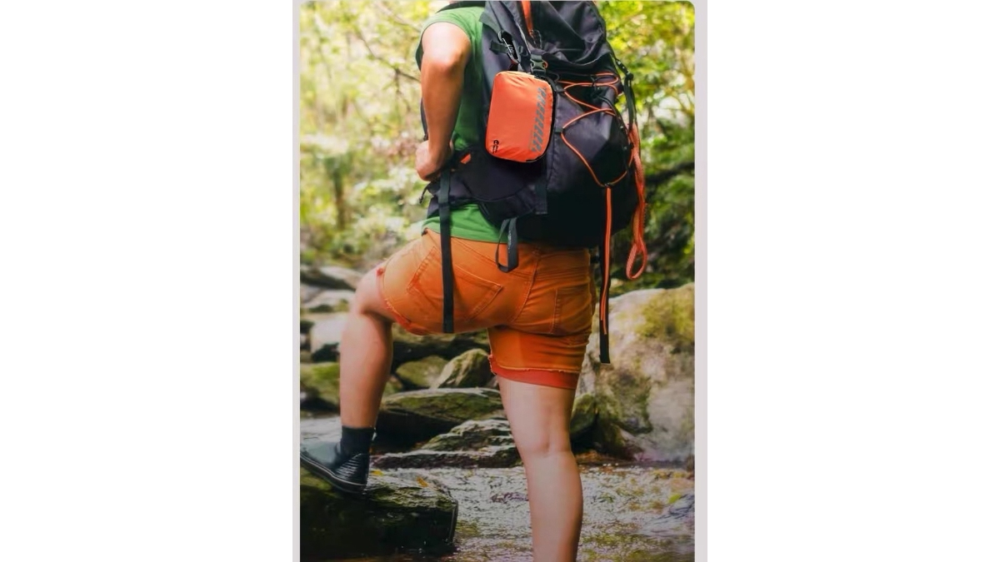

The Trauma Playbook for Wilderness Expeditions: How Field Teams Manage Fractures and Hemorrhage Before Evacuation
JUN 20, 2026

Opening
In remote trekking and guided expedition operations, serious injuries rarely happen in ideal conditions.
They happen during descent on unstable terrain, when fatigue is high and reaction time is low.
A typical scenario is not theoretical: a client slips on loose gravel, lands on a slope, and within minutes the situation escalates from a fall to a bleeding plus suspected fracture case in a remote environment.
At that moment, the guide is not performing first aid. They are managing a time-sensitive operational failure under evacuation delay conditions.
For outdoor tourism operators, expedition schools, and overland guiding teams, this is where liability is either controlled or created.
Section 1: Mass Hemorrhage Control
Stopping the bleed comes before anything else.
In real field incidents, the first visible problem is often not the fracture. It is uncontrolled bleeding from lacerated tissue.
Standard consumer-grade kits typically rely on adhesive dressings that lose adhesion under sweat, motion, or moisture. In a moving evacuation environment, this becomes a failure point.
Field response (what actually happens)
- A disposable tourniquet is applied above the injury site to immediately restrict arterial flow.
- Sterile gauze is used as the first layer of compression.
- Direct pressure is maintained while preparing evacuation movement.
This is not treatment in a clinical sense. It is temporary physiological stabilization to prevent deterioration during transport delay.
Section 2: Fracture Immobilization
Once bleeding is controlled, the next operational risk is movement-induced secondary damage.
A fractured limb on uneven terrain does not remain stable. Without immobilization, every step of evacuation increases the risk of nerve or vessel damage.
Field procedure
- A rigid polymer splint (18-inch) is deployed directly from compact storage.
- The limb is aligned to a functional position without attempting correction.
- Compression bandages are used to secure the splint against movement.
- Final fixation is reinforced to prevent shift during terrain evacuation.
The objective is not anatomical perfection. The objective is movement elimination under field transport conditions.
Section 3: Why This Matters for Operators
For outdoor operators, the issue is not medical complexity. It is operational consequence.
A single unmanaged injury can result in:
- Trip interruption or cancellation.
- Escalating evacuation logistics costs.
- Insurance claim exposure.
- Reputational loss in guided group operations.
Most safety kits fail not because they are absent, but because they are not designed for real movement-based environments.
Section 4: System Design Logic
The GoSafeMed Outdoor system is structured around field severity levels:
- MINI - personal friction injuries and minor incidents.
- STANDARD - group-level injury stabilization capability.
- PLUS - fracture, hemorrhage, and evacuation-delay scenarios.
Key components include:
- Disposable Tourniquet for hemorrhage control.
- 18-inch Polymer Splint for fracture immobilization.
- Compression Bandage for field stabilization.
- Sterile wound dressing modules for primary closure support.
These are not standalone items. They function as a layered response system designed for delayed evacuation environments.
Section 5: Procurement Perspective
From a procurement standpoint, the key evaluation question is not, “What is inside the kit?”
It is, “Can this system maintain injury stability during evacuation delay conditions in real terrain operations?”
This shifts procurement logic from SKU comparison to risk containment capability assessment.